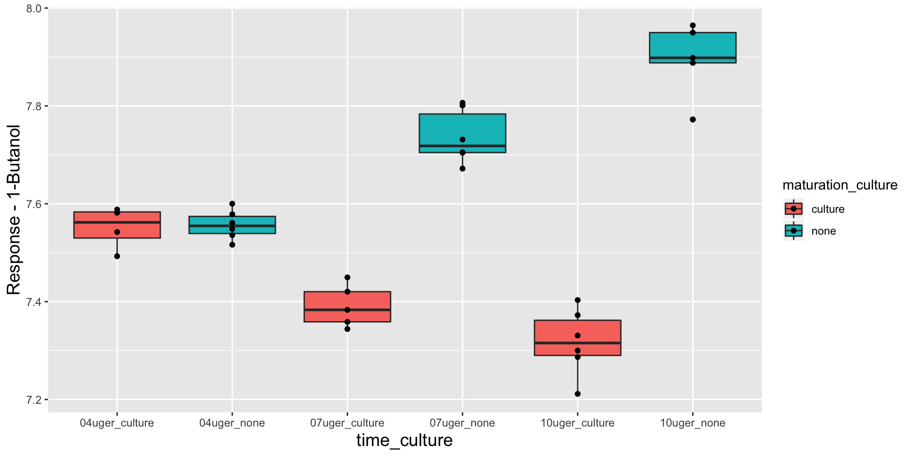

library(rio)
library(ggplot2)First we import data. this can be done in three ways.
X <- import('../BASICs/data/cheese_aromas.xlsx')X <- import('cheese_aromas.xlsx')X <- import('~/Dropbox/Backup/MyDocumentsOnC/Course and teaching/FOOD_Rcourses/BASICs/data/cheese_aromas.xlsx')If we want nice tables in the report, then the two packages knirt and kableExtra is very useful.
library(knitr)
library(kableExtra)
df <- head(X[,1:4],20)
kable(df,digits = 1, caption = 'Some caption for my nice table')| maturation_culture | time_weeks | time_culture | 1Butanol |
|---|---|---|---|
| culture | 4 | 04uger_culture | 7.5 |
| culture | 4 | 04uger_culture | 7.5 |
| culture | 4 | 04uger_culture | 7.6 |
| culture | 4 | 04uger_culture | 7.6 |
| none | 4 | 04uger_none | 7.6 |
| none | 4 | 04uger_none | 7.6 |
| none | 4 | 04uger_none | 7.5 |
| none | 7 | 07uger_none | 7.7 |
| none | 7 | 07uger_none | 7.8 |
| none | 7 | 07uger_none | 7.7 |
| culture | 7 | 07uger_culture | 7.4 |
| culture | 7 | 07uger_culture | 7.3 |
| culture | 7 | 07uger_culture | 7.4 |
| culture | 7 | 07uger_culture | 7.4 |
| culture | 7 | 07uger_culture | 7.4 |
| none | 7 | 07uger_none | 7.7 |
| none | 7 | 07uger_none | 7.8 |
| none | 7 | 07uger_none | 7.7 |
| none | 10 | 10uger_none | 7.9 |
| none | 10 | 10uger_none | 8.0 |
tb <- kable(df,digits = 1)
tb <- kable_styling(tb, "striped", full_width = F)
tb <- column_spec(tb, 1:2, bold = T)
tb <- row_spec(tb, c(7,19), bold = T, color = "white", background = "#D7261E")
tb <- row_spec(tb, c(3,20), bold = T, color = "white", background = "blue")
tb| maturation_culture | time_weeks | time_culture | 1Butanol |
|---|---|---|---|
| culture | 4 | 04uger_culture | 7.5 |
| culture | 4 | 04uger_culture | 7.5 |
| culture | 4 | 04uger_culture | 7.6 |
| culture | 4 | 04uger_culture | 7.6 |
| none | 4 | 04uger_none | 7.6 |
| none | 4 | 04uger_none | 7.6 |
| none | 4 | 04uger_none | 7.5 |
| none | 7 | 07uger_none | 7.7 |
| none | 7 | 07uger_none | 7.8 |
| none | 7 | 07uger_none | 7.7 |
| culture | 7 | 07uger_culture | 7.4 |
| culture | 7 | 07uger_culture | 7.3 |
| culture | 7 | 07uger_culture | 7.4 |
| culture | 7 | 07uger_culture | 7.4 |
| culture | 7 | 07uger_culture | 7.4 |
| none | 7 | 07uger_none | 7.7 |
| none | 7 | 07uger_none | 7.8 |
| none | 7 | 07uger_none | 7.7 |
| none | 10 | 10uger_none | 7.9 |
| none | 10 | 10uger_none | 8.0 |
… Or in the tidyverse way (you’ll need tidyverse package installed.)
library(tidyverse)
kable(df,digits = 1) %>%
kable_styling("striped", full_width = F) %>%
column_spec(1:2, bold = T) %>%
row_spec(c(7,19), bold = T, color = "white", background = "#D7261E") %>%
row_spec(c(3,20), bold = T, color = "white", background = "blue")We use ggplot2 for plotting the data in an informative way.
ggplot(data = X, aes(time_culture,`1Butanol`, fill = maturation_culture)) +
geom_boxplot() +
geom_point() +
ylab('Response - 1-Butanol') +
theme(axis.title=element_text(size=14))
After visualization, the data is analysed by ANOVA
mdl <- lm(data = X, `1Butanol` ~ maturation_culture*time_weeks)
kable(anova(mdl), digits = 3, caption = 'ANOVA table analysing culture and time interactions')| Df | Sum Sq | Mean Sq | F value | Pr(>F) | |
|---|---|---|---|---|---|
| maturation_culture | 1 | 0.792 | 0.792 | 258.662 | 0.000 |
| time_weeks | 1 | 0.027 | 0.027 | 8.713 | 0.006 |
| maturation_culture:time_weeks | 1 | 0.413 | 0.413 | 134.923 | 0.000 |
| Residuals | 28 | 0.086 | 0.003 |